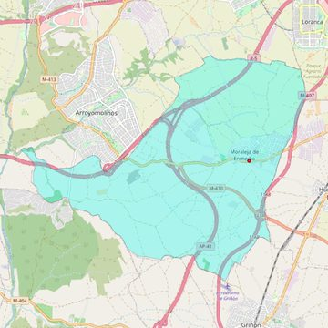

San Millán
- Arciprestazgo
- Griñón
- Población
- Moraleja de Enmedio
- Dirección postal
- Pza. 18 de Julio, 2
- Código postal
- 28950
- Extensión
- 31,05 km² (3.105 ha)
- Teléfono
- 916 485 971
- Correo electrónico
- contacto@smmoraleja.com
- Información demográfica
- De la parroquia · De la población (Moraleja de Enmedio) · Del arciprestazgo (Griñón)
- Dirección corta
- charlie-diaz-azarola.github.io/geoestadistica/p/059


Descargar mapaLímites según decreto
Los del término municipal
¿Algún dato de esta parroquia es incorrecto o ha cambiado? Comuníquenoslo.